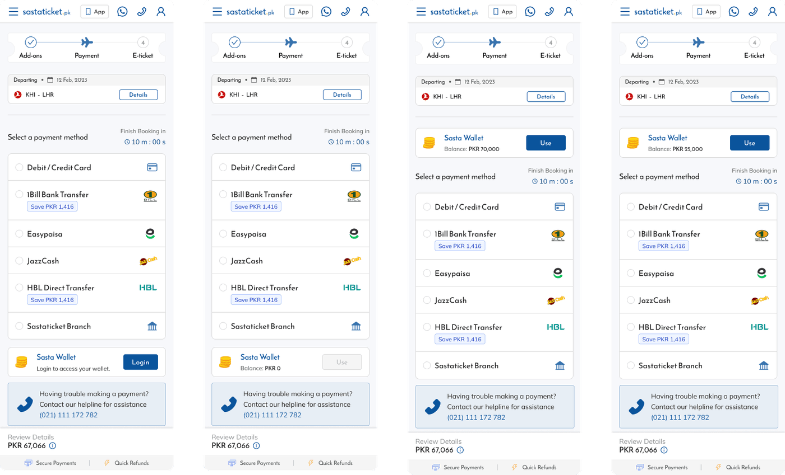
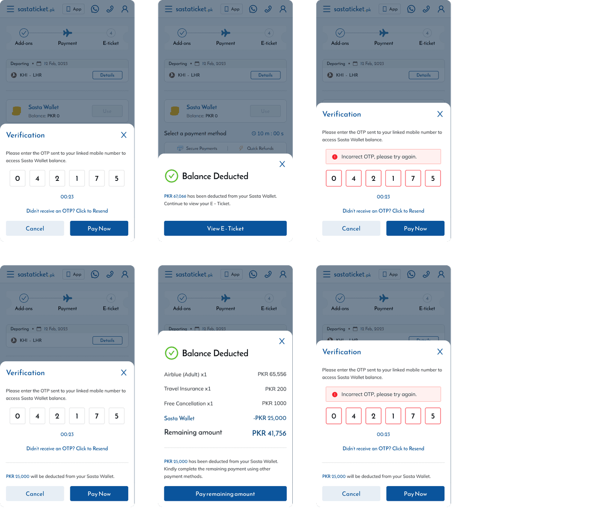
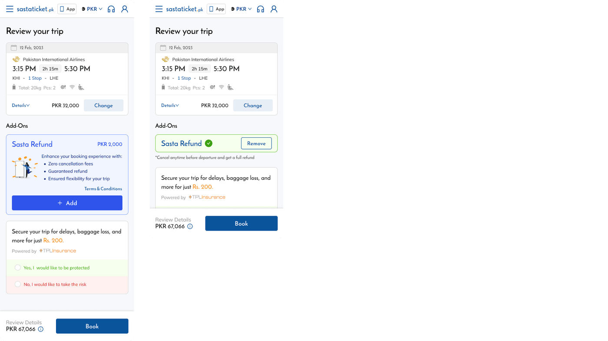
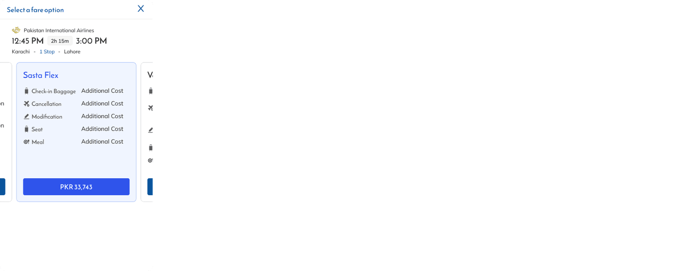
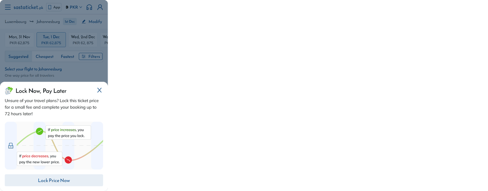
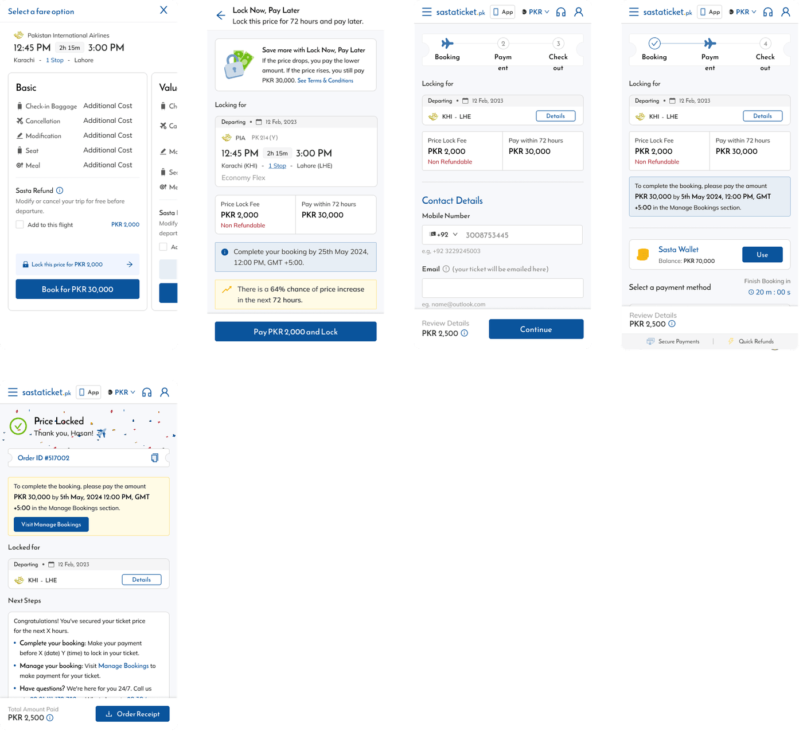
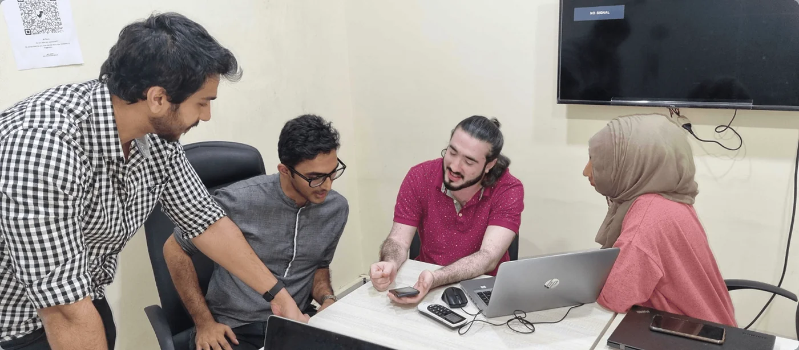

KFH Capital
Repositioning KFH Capital as an institutional leader
Rebuilt a wealth management platform around two distinct investor journeys.


Sastaticket's payment experience had a trust problem. Refunds took up to 14 days through Pakistani banking, leaving users who cancelled a flight unable to rebook for weeks. Prices fluctuated constantly and there was no way to protect a fare once you found it. The platform was losing users at both ends, after cancellations and before payment.
Over 18 months I designed five interconnected financial features that changed that. Each one solved a distinct problem while making the features before it more valuable. The result was a payment experience that went from a source of anxiety to a reason to come back.
The wallet started as a focused solution to one problem. Instead of routing refunds through Pakistani banking and waiting 14 days, users received their refund into a Sasta Wallet instantly and could rebook the same day. No top-up, no transfers, just a wallet that caught refunds and made them immediately usable. That constraint was intentional, solve one thing well before building on top of it.
The wallet integrated into the existing payment step as an additional payment method. Users with insufficient wallet balance could use it partially and complete the remainder through another method. OTP verification added a necessary security layer without significantly disrupting the payment flow, and the wallet dashboard gave users real time visibility of every transaction including refund status.



Sasta Refund gave users free cancellation on any flight for a small fee added at booking. It only worked because the wallet existed, refunds landed instantly rather than going back through the banking system. The two features were designed to reinforce each other.
As the feature matured, Sasta Refund was also surfaced through Sasta Flex, a bundled fare option at the fare selection step. Users who didn't take it there saw it again at checkout. Two touchpoints, different user mindsets, same product.


Not every user could cover a flight on a single card. Partial Payments let users split a booking across any combination of payment methods in any amounts, as long as they totalled the booking price. After each payment the remaining amount updated in real time and the next method selection was immediately available. Validation states handled minimum amounts, maximum limits, and real time balance updates after each payment.

Users were dropping off at the traveler details step not because they didn't want to book, but because they weren't ready to commit and didn't trust the price would hold. Price Freeze let users pay a small non-refundable fee to lock a price for up to 72 hours. If the price dropped they paid less. If it rose they paid the locked price.
I identified the traveler details page as the highest drop-off point and added a targeted prompt at the bottom of the form. Users who had already invested time filling in their details were more likely to respond to a low-friction commitment option than users earlier in the funnel. The explanation screen addressed the core anxiety before asking for commitment, and every post-freeze state was designed so no scenario left the user without a clear next step.


One proposal that didn't make it through was moving the addon upsell to after the traveler details step. My hypothesis was that users who had already invested time entering their information would be more committed and more likely to add optional features. Engineering constraints in the booking flow architecture made it infeasible at the time. The thinking remains sound.

Refund processing time for Sasta Wallet users dropped from 14 days to seconds. Sastaticket became the first travel platform in the region to offer a built-in wallet. Each feature built on the one before it: the wallet made Sasta Refund possible, Sasta Refund created the trust that made other features viable, and Price Freeze addressed the hesitation that was causing drop-off at the final step before booking.

The most interesting thing wasn't any individual feature. It was watching how each decision created or closed options for the next thing.
The wallet made Sasta Refund possible. Sasta Refund made Partial Payments more valuable. Value compounded across the system.
Designing across 18 months taught me to think in systems, not screens.
Rebuilt a wealth management platform around two distinct investor journeys.